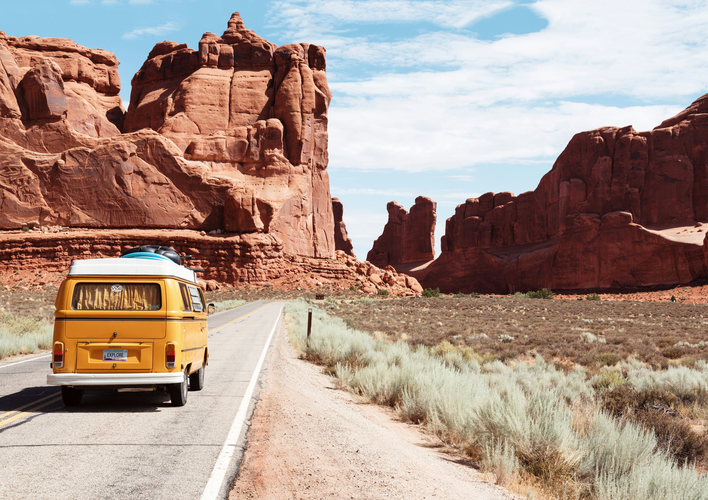

Traveling is one of my favorite hobbies. I love to travel because there is so much of the world I haven't seen yet, and I want to experience as much of it as I can! I love exploring and meeting people, trying different foods, and getting a little lost along the way. Whether I'm relaxing on a beach, swimming in the ocean, eating yummy food, or wandering around somewhere I've never been, I'll have a smile on my face. I love the excitement of new places and never knowing exactly what kind of adventure I'll end up on. Some of the best memories come from the things you didn't plan! I especially enjoy taking my kids on trips, showing them new places, and making memories together. I'm always up for a little adventure, a good laugh, and some sunshine. Give me a plane ticket or car and I will find somewhere fun to explore!
